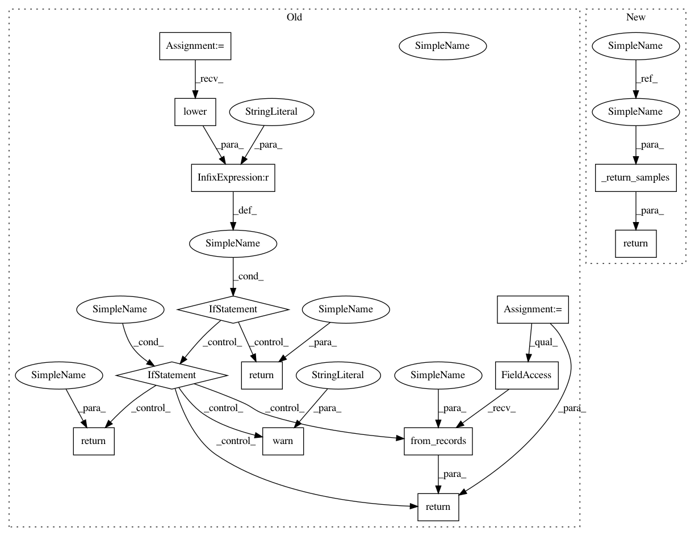

356bc2655cd30123f5ad008b5dc66b1940391331,pgmpy/sampling/Sampling.py,BayesianModelSampling,rejection_sample,#BayesianModelSampling#Any#Any#Any#,113
Before Change
i += len(_sampled)
if return_type.lower() == "dataframe":
if HAS_PANDAS:
return pandas.DataFrame.from_records(sampled)
else:
warn("Pandas installation not found. Returning numpy.recarray object")
return sampled
else:
return sampled
def likelihood_weighted_sample(self, evidence=None, size=1, return_type="dataframe"):
Generates weighted sample(s) from joint distribution of the bayesian
network, that comply with the given evidence.
After Change
if evidence is None:
return self.forward_sample(size)
types = [(var_name, "int") for var_name in self.topological_order]
sampled = np.zeros(0, dtype=types).view(np.recarray)
prob = 1
i = 0
while i < size:
_size = int(((size - i) / prob) * 1.5)
_sampled = self.forward_sample(_size, "recarray")
for evid in evidence:
_sampled = _sampled[_sampled[evid[0]] == evid[1]]
prob = max(len(_sampled) / _size, 0.01)
sampled = np.append(sampled, _sampled)[:size]
i += len(_sampled)
return _return_samples(return_type, sampled)
def likelihood_weighted_sample(self, evidence=None, size=1, return_type="dataframe"):
Generates weighted sample(s) from joint distribution of the bayesian
In pattern: SUPERPATTERN
Frequency: 4
Non-data size: 14
Instances
Project Name: pgmpy/pgmpy
Commit Name: 356bc2655cd30123f5ad008b5dc66b1940391331
Time: 2016-12-18
Author: utkarsh.gupta550@gmail.com
File Name: pgmpy/sampling/Sampling.py
Class Name: BayesianModelSampling
Method Name: rejection_sample
Project Name: pgmpy/pgmpy
Commit Name: 356bc2655cd30123f5ad008b5dc66b1940391331
Time: 2016-12-18
Author: utkarsh.gupta550@gmail.com
File Name: pgmpy/sampling/Sampling.py
Class Name: BayesianModelSampling
Method Name: rejection_sample
Project Name: pgmpy/pgmpy
Commit Name: 356bc2655cd30123f5ad008b5dc66b1940391331
Time: 2016-12-18
Author: utkarsh.gupta550@gmail.com
File Name: pgmpy/sampling/Sampling.py
Class Name: BayesianModelSampling
Method Name: likelihood_weighted_sample
Project Name: pgmpy/pgmpy
Commit Name: 356bc2655cd30123f5ad008b5dc66b1940391331
Time: 2016-12-18
Author: utkarsh.gupta550@gmail.com
File Name: pgmpy/sampling/Sampling.py
Class Name: BayesianModelSampling
Method Name: forward_sample
Project Name: pgmpy/pgmpy
Commit Name: 356bc2655cd30123f5ad008b5dc66b1940391331
Time: 2016-12-18
Author: utkarsh.gupta550@gmail.com
File Name: pgmpy/sampling/Sampling.py
Class Name: GibbsSampling
Method Name: sample